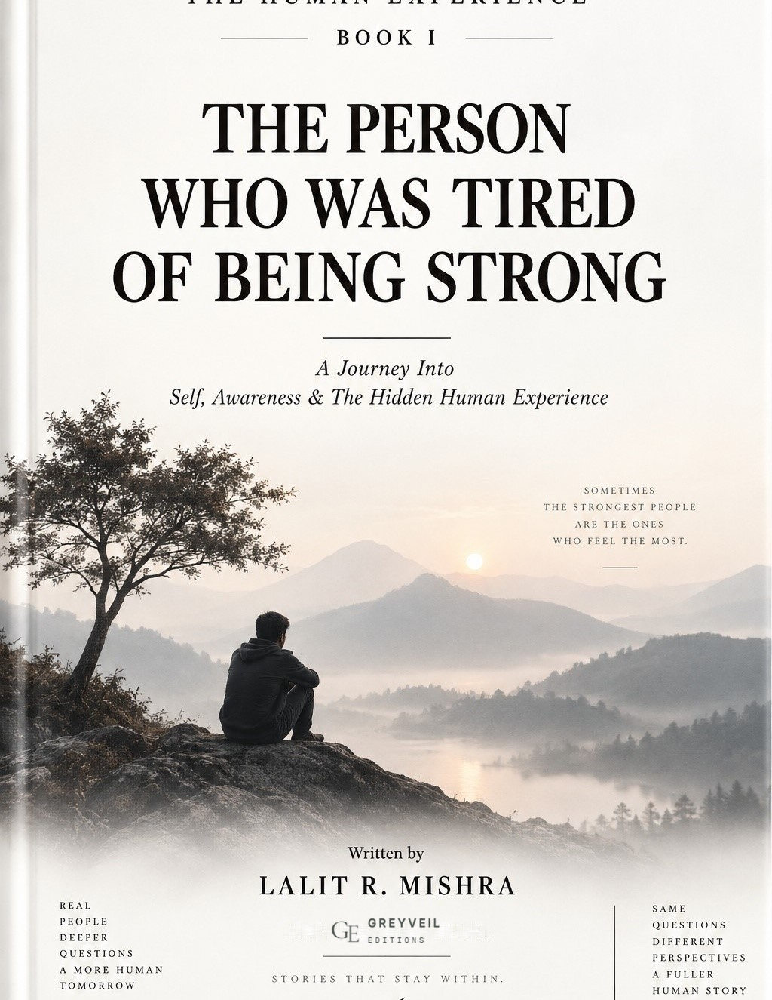
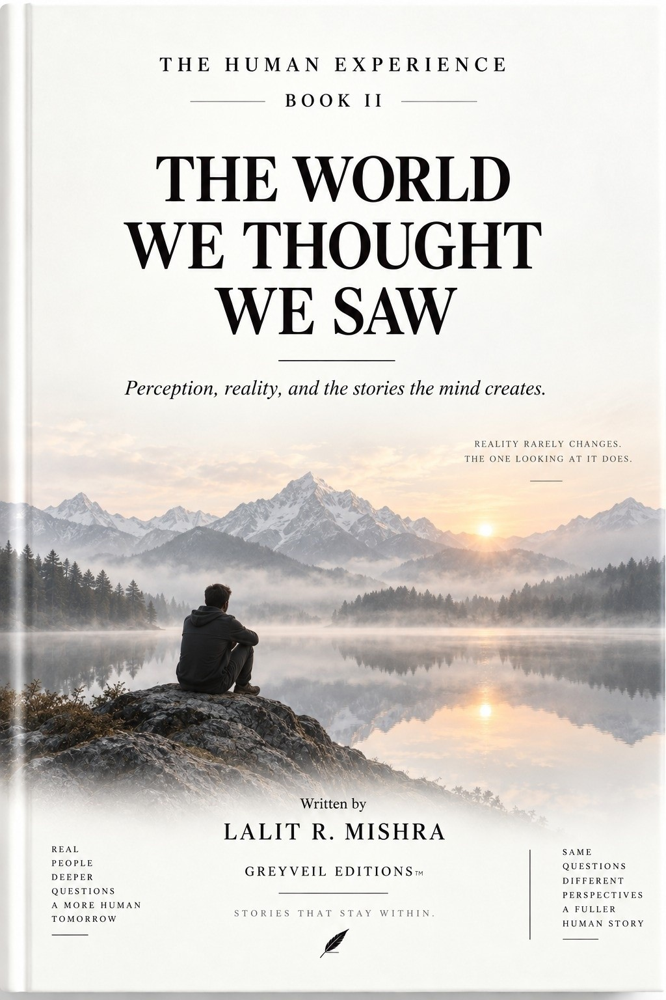
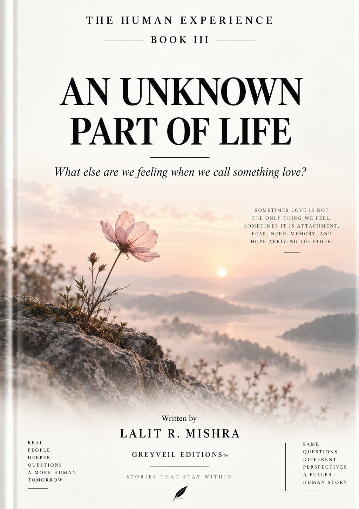

Book I
The Person Who Was Tired of Being Strong
A journey into self, awareness, and the hidden human experience.
By Lalit R. Mishra · The Human Experience
The Human Experience / Volume II
Self → Perception → Love
The Human ExperienceThe Inner Experience
Series
The journey within shapes everything outside.
Books

Book I
A journey into self, awareness, and the hidden human experience.
By Lalit R. Mishra · The Human Experience

Book II
Reality rarely changes. The one looking at it does.
By Lalit R. Mishra · The Human Experience

Book III
What else are we feeling when we call something love?
By Lalit R. Mishra · The Human Experience
Navigation